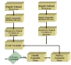

Process Center



The Process Center is a central location to monitor and control all process control activity. It is opened from the main configuration tool bar or from the Window menu.
Stop/Stop ALL processes
Process #1’s name and state
Process #1’s elements and their states. Note that the comments can be edited here or in each element’s dialog
Start/Stop only the selected process(es)
Run mode to use when starting a process. Note that the mixed mode will leave the process in its current mode.